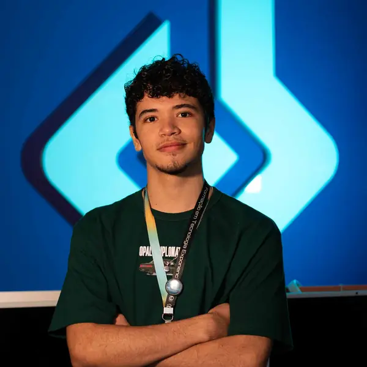
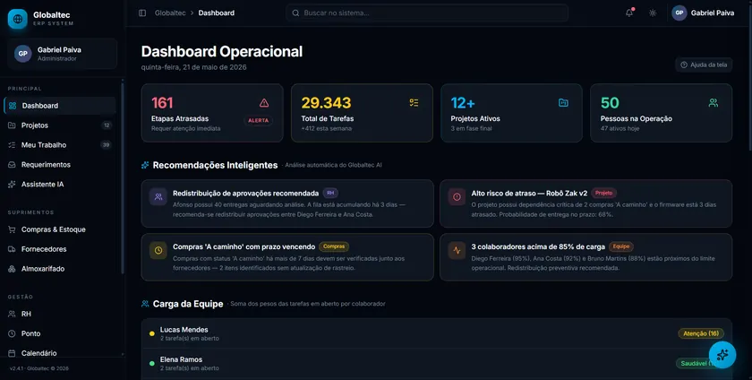

> problema
O ERP da Globaltec (módulos Principal, Suprimentos, Gestão e Sistema) não mostrava onde o fluxo de trabalho travava.
> olá, eu sou_
Estudante de ADS → Eng. de Software.
Transformo ideias em protótipos funcionais com IA.
> about_me
Estou no começo da carreira e já entrego. Uso IA como ferramenta de trabalho: em vez de passar semanas discutindo requisitos, monto um protótipo funcionando em poucos dias. Assim o cliente clica, testa e decide o que quer e o que não quer.
Hoje sei o básico de Python, HTML e CSS e estou começando JavaScript. Este site é o meu primeiro projeto de estudo nele. Sou de Anajatuba (MA) e quero, um dia, levar tecnologia e empreendedorismo para a minha cidade.

> where_ive_been
Início em Análise e Desenvolvimento de Sistemas na Universidade Ceuma (campus Renascença, São Luís – MA).
Projeto de consultoria para a Globaltec Educacional com a Equipe V3: dashboard de visibilidade de fluxo + assistente Kosmus AI sobre o ERP.
O projeto virou estágio na Globaltec Educacional.
Participo do Oxygeni Hub (agência de inovação da Uniceuma), estudo JavaScript e construí este portfólio.
Migração para Engenharia de Software e um estágio remunerado onde eu cresça com um time.
> featured_project ★ destaque
Consultoria · Equipe V3 · 28/04 – 20/06/2026 · Lovable + Claude API
O ERP da Globaltec (módulos Principal, Suprimentos, Gestão e Sistema) não mostrava onde o fluxo de trabalho travava.
Depois de cada reunião com o cliente, eu e um colega anotávamos as ideias, prototipávamos as melhores no Lovable e levávamos funcionando para a reunião seguinte. Saíram um dashboard de visibilidade de fluxo e o Kosmus AI, um assistente com a Claude API.
Relatórios técnicos (ABNT), relatórios quinzenais, pitch e mapa mental do ERP — e o projeto virou o meu estágio na Globaltec.
Equipe V3 · 4 estudantes de ADS da Uniceuma.

> works
Visibilidade de fluxo e assistente com IA sobre um ERP real. Feito em equipe, virou estágio.
> ver o caseHTML, CSS e JS puro, sem framework, com comentários em português. Feito para estudar.
> githubPróximos projetos de estudo vão aparecer aqui. Acompanhe pelo GitHub.
> github.com/LgymHL> services
Tem uma ideia e quer ver ela funcionando antes de investir pesado? Eu ajudo.
Sua ideia virando algo clicável em poucos dias.
Indicadores e telas para validar antes de desenvolver.
Página simples, rápida e que roda em qualquer celular.
> lets_talk